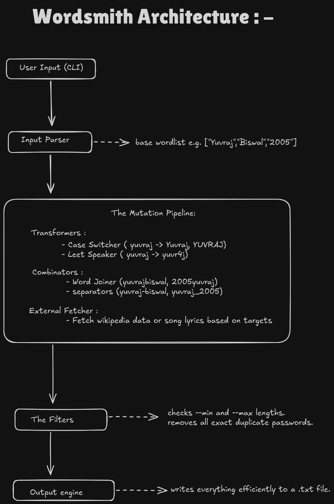

Transformers
Case & leet engine
Generates lower / UPPER / Capitalised variants of every base word, then optionally swaps letters for look-alike digits (a→4, e→7, i→2, o→9, u→3).
A smart, modular CLI for generating targeted password wordlists. Hand it a few base words — a name, a date, a pet — and it builds hundreds of plausible permutations through case transforms, a leet-speak engine, and length filtering. Pure Python standard library, no dependencies, runs anywhere there's a prompt.
$ python wordsmith.py -w acme,falcon,2024 -l -m 4 -M 16 [*] base words loaded: ['acme', 'falcon', '2024'] acme ACME Acme 4cm7 falcon FALCON Falcon f4lc9n 2024 # case transforms + leet (a→4 e→7 i→2 o→9 u→3), length-bounded
Generates lower / UPPER / Capitalised variants of every base word, then optionally swaps letters for look-alike digits (a→4, e→7, i→2, o→9, u→3).
Intelligently combines base words and numbers with common separators (- _ .) to mirror how people actually build passwords.
Drops duplicates and enforces --min / --max length bounds, so the list stays focused and fast to crack against.
No requirements.txt, no virtualenv gymnastics. Clone, run, pipe the output straight into your cracker.
# Python 3, standard library only — nothing to install $ git clone https://github.com/keroxlabs/wordsmith.git $ cd wordsmith # basic — a few base words $ python wordsmith.py -w yuvraj,biswal,2005 # advanced — leet on, bound length 8–16 $ python wordsmith.py -w yuvraj,biswal,2005 -l -m 8 -M 16
| Flag | Long | Description | Default |
|---|---|---|---|
-w | --words | Comma-separated base words | required |
-m | --min | Minimum password length | 4 |
-M | --max | Maximum password length | 12 |
-l | --leet | Enable leet-speak transforms | false |
-h | --help | Show help and exit | — |
Wordsmith is built the way professional offensive tooling is: small stages, each doing one thing. Strings flow through transformers (case, leet), into combinators (mixing words and separators), through filters (dedup + length), and out the I/O engine to disk.
